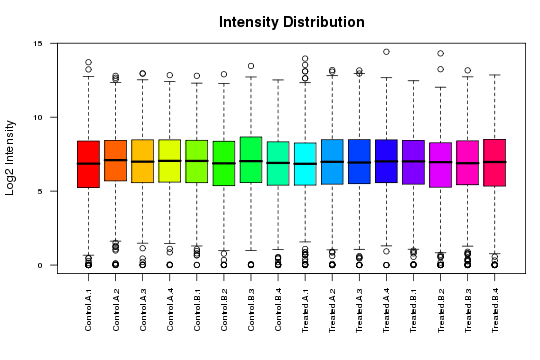
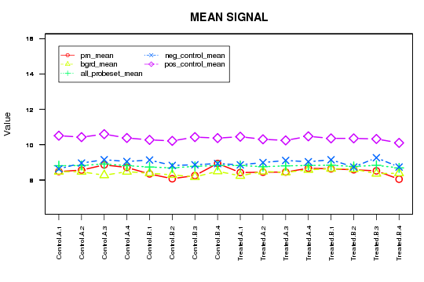
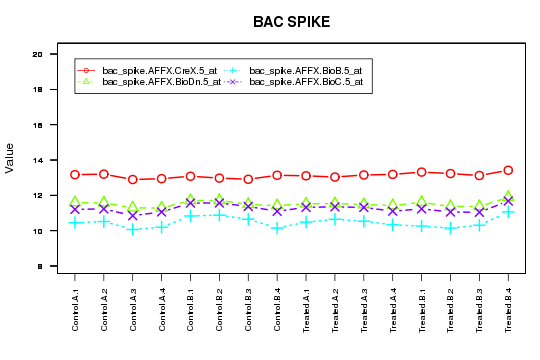
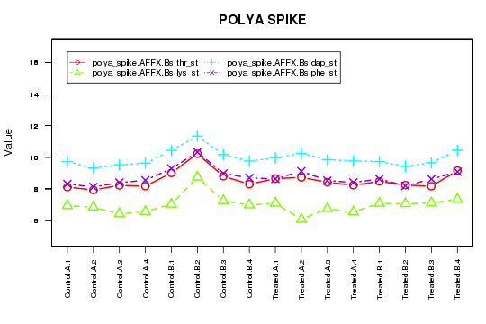
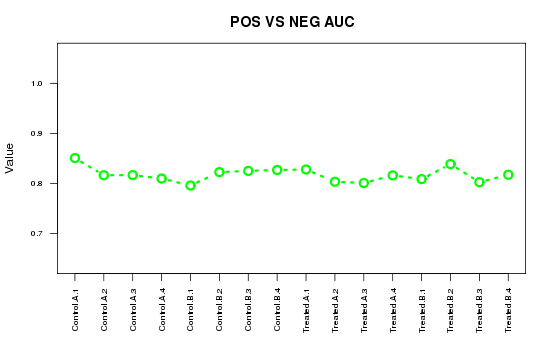
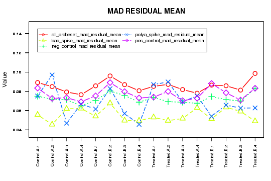
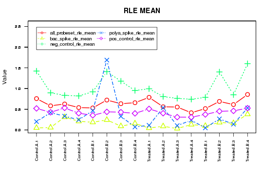
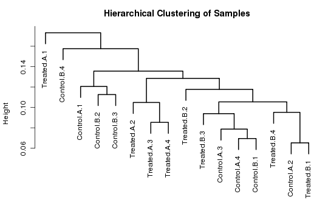

Quality Assessment
| |
Treatment |
Group |
SampleID |
| H9.CEL | Control | A | Control.A.1 |
| H10.CEL | Control | A | Control.A.2 |
| H11.CEL | Control | A | Control.A.3 |
| H12.CEL | Control | A | Control.A.4 |
| H13.CEL | Control | B | Control.B.1 |
| H14.CEL | Control | B | Control.B.2 |
| H15.CEL | Control | B | Control.B.3 |
| H16.CEL | Control | B | Control.B.4 |
| H1.CEL | Treated | A | Treated.A.1 |
| H2.CEL | Treated | A | Treated.A.2 |
| H3.CEL | Treated | A | Treated.A.3 |
| H4.CEL | Treated | A | Treated.A.4 |
| H5.CEL | Treated | B | Treated.B.1 |
| H6.CEL | Treated | B | Treated.B.2 |
| H7.CEL | Treated | B | Treated.B.3 |
| H8.CEL | Treated | B | Treated.B.4 |
|
Figure 1 - Intensity Distribution Figure 2 - Mean Signal Figure 3 - BAC Spike Figure 4 - polya Spike Figure 5 - Pos Vs Neg Auc Figure 6 - Mad Residual Signal Figure 7 - RLE MEAN Figure 8 - Hierarchical Clustering of Samples

Figure 1: Intensity
Distribution

Figure 2: Mean Signal

Figure 3: BAC Spike

Figure 4: polya Spike

Figure 5: Pos Vs Neg Auc

Figure 6: Mad Residual Signal

Figure 7: RLE MEAN

Figure 8: Hierarchical
Clustering of Samples